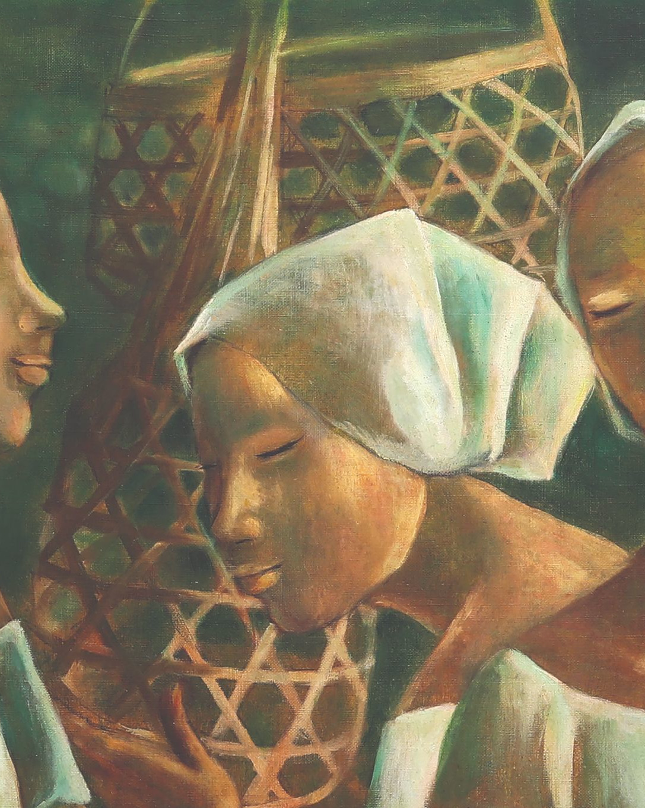
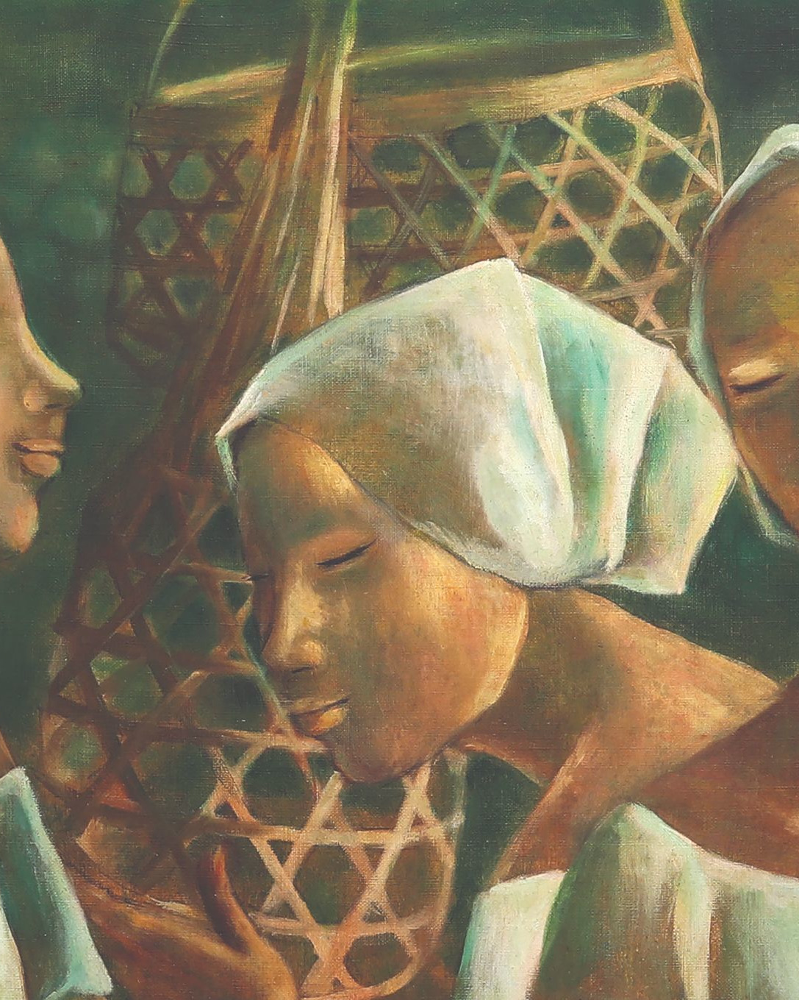
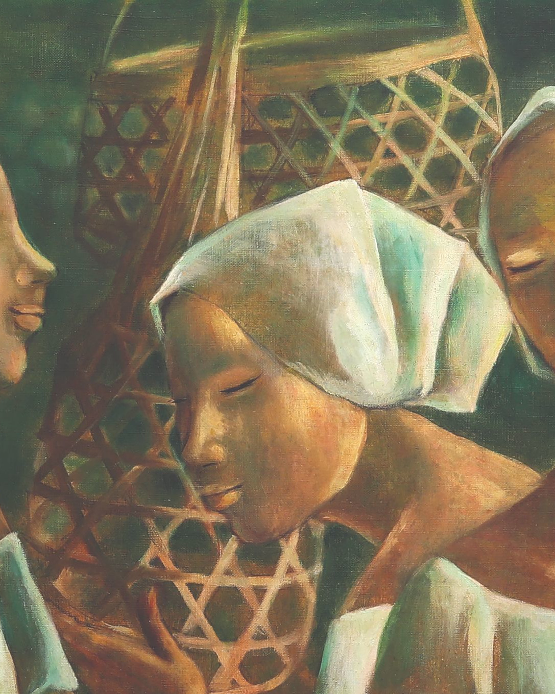

Anita Magsaysay-Ho was an important and influential Philippine artist who helped to encourage and support the development of Modern Art and Neo-Realist painting in her country. Born in Manila in 1914, she went on to study at the University of the Philippines School of Fine Arts with Fabian de la Rosa and acclaimed Filipino painter Fernando Amorsolo. She later traveled to the United States and was a student at both the Cranbrook Academy of Art in Michigan and the Art Students League in New York.
